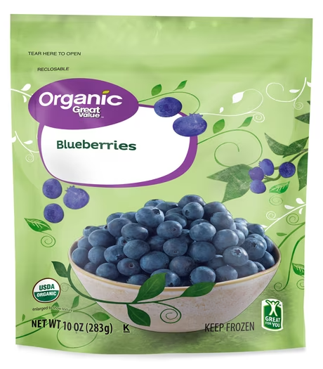
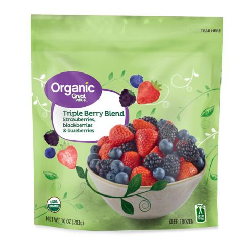
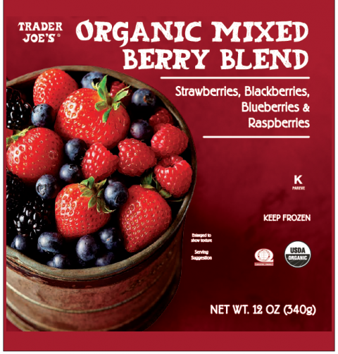

E. coli O145. Walmart & Trader Joe’s.
Do this: Check your freezer.
Great Value & Trader Joe’s Frozen Organic Blueberries and Berry Blends



What’s wrong
- Possible E. coli O145:H28 (a Shiga toxin-producing E. coli).
- It can cause severe stomach cramps, bloody diarrhea and vomiting, and sometimes kidney failure (HUS), especially in young children, older adults and people with weak immune systems.
- Recalled as a precaution after traceback linked to the frozen blueberries in the first (Jul 3) recall.
- None mentioned in this expansion notice. The earlier outbreak tied to this supplier’s frozen blueberries made 17 people sick in FL and GA (6 hospitalized, no deaths); CDC declared that outbreak over on Sep 21, 2026.
Check your kitchen
- Great Value Organic Triple Berry Blend, 10 oz (strawberries, blackberries, blueberries) · UPC
7874211226· lot6 031 01(best if used by Jan 31,2028) and lot6 041 01(Feb 10,2028) · lot code on the front of the bag - Great Value Organic Blueberries, 10 oz · UPC
7874211213· lots6 019 01,6 040 01and6 163 01(best if used by Jan 19,2028; Feb 9,2028; Jun 12,2028) · lot code on the front of the bag - Trader Joe’s Organic Mixed Berry Blend, 12 oz · UPC
00977654· lot6 051 01· best before Feb 20,2028· lot code on the back of the bag
Where it was sold
✓ Confirmed by the official notice- Select Walmart stores (Great Value) in AL, AR, CT, FL, GA, IA, IL, IN, KS, KY, LA, MI, MN, MO, MS, NC, ND, NE, NJ, NY, OH, OK, PA, SC, SD, TN, TX, VA, WI, WV and Puerto Rico.
- Select Trader Joe’s stores in AL, AR, CO, DE, FL, GA, IL, IN, IA, KS, KY, LA, MD, MI, MN, MO, NE, NC, OH, OK, PA, SC, TN, TX, VA, WI and DC.
Do this:
- Check your freezer.
- Don’t eat it.
- Throw it away or return it to Walmart or Trader Joe’s for a full refund.
- Questions: Info.foodsafety@comfrut.com or 336‑899‑5612 (Mon to Fri, 8 AM to 6 PM ET).
Read the official notice: FDA notice (Oct 2 expansion) · FDA outbreak page (blueberries)